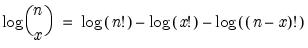
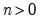
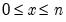
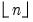
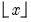

@binomlog Element Functions Natural logarithm of the binomial coefficient. Syntax: @binomlog(n, x) n: integer x: integer Return: number Compute the value of the beta integral for elements of a and b:  for integers  and . If n or x are not integers, the integer floors  and  will be used. Examples = @binomlog(2,1) returns 0.69314.... Cross-references See also @binom.